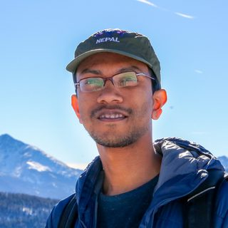

Md Kamruzzaman Kamrul
PhD student · Purdue University
Also mentoring in 2026Applies machine learning and natural language processing across finance and civil engineering, including large language models for time-series forecasting and deepfake detection, alongside work on the seismic response of soil and embankments.
- Machine learning
- Large language models
- Natural language processing
- Civil engineering